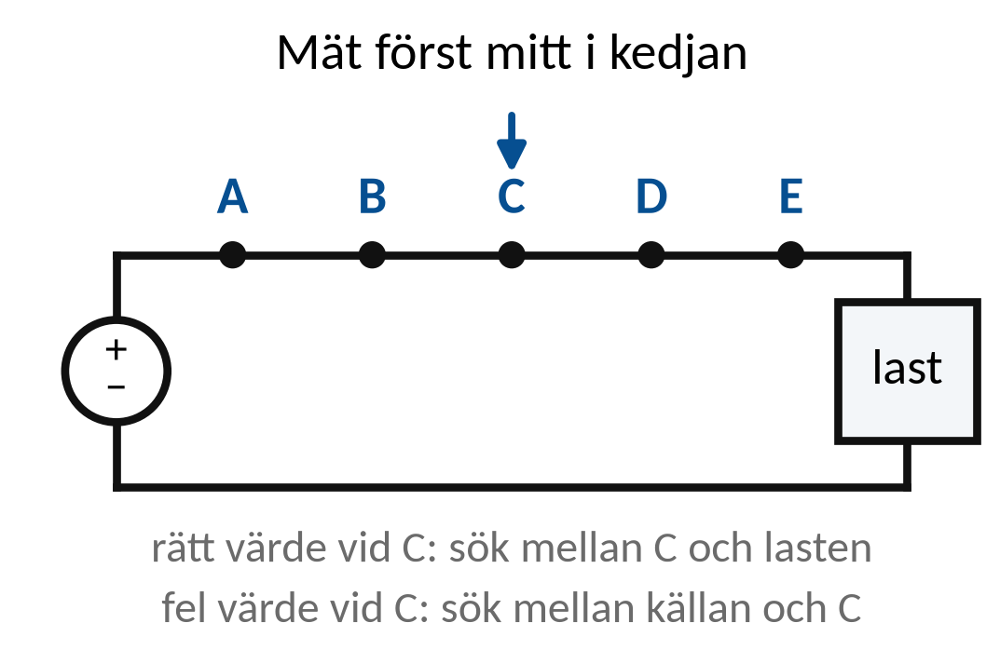
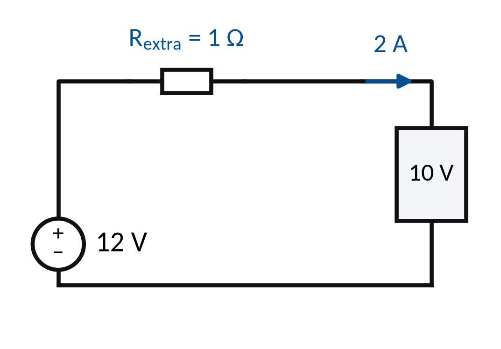
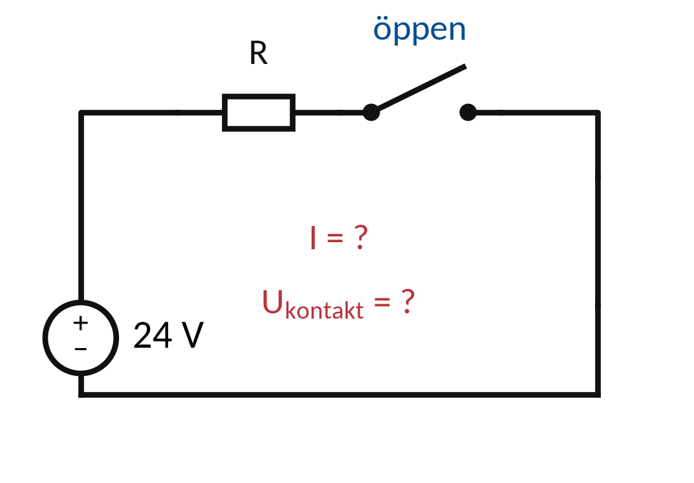
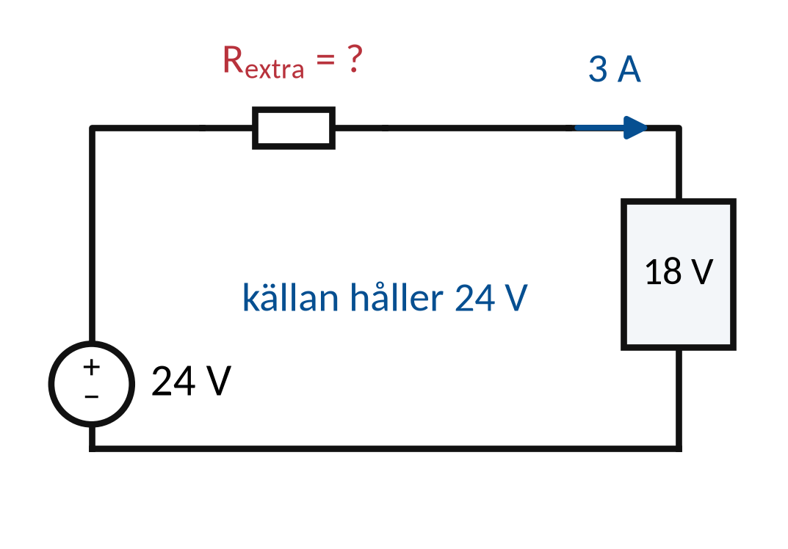

Vecka 45 · Del 1 av 3
Del 1: Systematisk felsökning
1 Översikt
Det här ska du kunna
- Avgränsa ett felområde med schema och mätdata.
- Välja en kontroll som skiljer två möjliga felorsaker.
Fundera först: Vad är skillnaden mellan att mäta många saker och att välja en mätning som besvarar en fråga? Svaret finns i teorin nedan.
Så gör du
- Läs teorin (7 korta avsnitt). Titta på figuren till varje avsnitt.
- Följ exemplen med papper och räknare, steg för steg.
- Gör övningarna 1.1–1.10. Fastnar du: Ledtråd 1 visar vilket samband du behöver och var i teorin det förklaras. Ledtråd 2 visar hur du börjar och Ledtråd 3 exemplet som räknar samma sorts uppgift med andra tal. Öppna facit när du har ett eget svar.
- Lämna in veckans uppgifter: Veckans inlämning.
Så skriver du en lösning som går att följa
1. Givet och sökt
Skriv av värden, enheter och vad du ska bestämma.
2. Samband och villkor
Välj formel eller princip. Kontrollera koppling, driftfall och antaganden.
3. Uträkning och kontroll
Omvandla enheter, sätt in värden och tolka resultatet.
I resonemangsfall: koppla observation till en motiverad slutsats.
Lärarens presentation · PDF · Räknarhjälp · Formelblad
Förkortningar och beteckningar i den här delen (2)
- R
- resistans. Resistorns motstånd mot ström. Beror inte på frekvensen. Enhet: Ω (ohm).
- P
- aktiv effekt. Den effekt som verkligen blir värme eller arbete. Enhet: W (watt), kW.
2 Teori
Läs avsnitten i ordning. Övningarna hänvisar hit.
1. Observation och prövbar hypotes
Observation är ett beskrivet symtom eller ett mätvärde.
Hypotes är en möjlig förklaring som ännu behöver prövas.
Skiljande kontroll ska ge olika resultat för olika orsaker.
Slutsats anger vad data stödjer och vilka frågor som återstår.
2. Felsökningens arbetsgång
Bekräfta symtomet och den förväntade funktionen.
Avgränsa systemet innan möjliga orsaker prövas.
Symtom, hypotes, kontroll, slutsats
Skriv vad varje kontroll ska kunna bekräfta eller utesluta.
Riskbedömning och arbetsmetod följer varje moment.
3. Funktionsuppdelning
Dela systemet i källa, matningsväg, styrning och last.
Avgör vilka delar som redan har stöd av observationerna.
Fungerande manöver bevisar inte fungerande kraftdel
En motor kan ha rätt startkommando men sakna en fas.
Mätpunkten ska väljas efter den funktion som prövas.
4. Halveringsmetoden
En kontroll ungefär mitt i en kedja kan halvera sökområdet.
Metoden fungerar när schema och referenspunkt är kända.

Mellanpunktens värde styr nästa delområde
Finns rätt spänning vid mitten men inte vid lasten undersöks i första hand den senare delen av matningsvägen.
5. Avbrott och kortslutning
Ett avbrott hindrar ström i den berörda vägen.
En kortslutning ger en oavsiktlig lågimpediv väg.
Spänningsbild och strömbild ska stämma ihop
En öppen seriekontakt kan ha stor spänning över sig.
Kortslutningsmisstanke kräver kontroll av skydd och skadestatus.
6. Glapp och förhöjd resistans
Ett spänningsfall kan vara litet utan last men stort under last.
Förhöjd kontaktresistans kan ge lokal värme.
ΔU = I · R P = I²R
0,15 Ω vid 8 A ger 1,2 V fall och 9,6 W värme.
Kontrollerade felmoduler används i undervisning, aldrig avsiktligt glapp.
7. En skiljande kontroll
Två hypoteser ska ge olika förväntade kontrollresultat.
Då ger kontrollen mer information än ett slumpmässigt mätvärde.
Exempel: matningsbortfall eller avbrott i hållväg
Välj en mätpunkt och ett driftläge där de två hypoteserna förutsäger olika värden. Skriv förväntat värde före mätningen.
3 Exempel
Följ exemplet steg för steg med papper och räknare. Övningarna använder samma metod med andra tal.
Exempel: observation och hypotes
En 12 V-lampa lyser inte. Källan visar 12 V under provet, men lampan har 0 V mot hel retur.
Observation används för att avgränsa sökområdet
- Observation: normal källspänning men bortfall vid lasten.
- Hypotes: avbrott eller stort fall i matningsvägen.
- Nästa kontroll prövar en mellanpunkt enligt säker mätplan.
Det finns ännu inget bevis för en viss felkomponent. Mellanpunkten ska skilja två delområden åt.
Exempel: förhöjd kontaktresistans
Källan håller 12 V under last. Lasten får 10 V vid 2 A. Övriga fall försummas.

Rextra = (Ukälla − Ulast)/I P = I² · Rextra
- ΔU = 12 − 10 = 2 V.
- Rextra = 2/2 = 1 Ω.
- P = 2² · 1 = 4 W i den extra resistansen.
Kontroll: ΔU · I = 2 · 2 = 4 W. Tomgång kan dölja fallet eftersom strömmen då är liten.
4 Övningar
Räkna på papper. Bocka av en övning när du har kontrollerat ditt svar mot facit. Avbockningen sparas i den här webbläsaren.
Övning 1.1: Observation eller diagnos
”Motorn startar inte” och ”kontaktorn är trasig” skrivs i en rapport. Vilket är observation och vilket är hypotes?
Givet: Rapporten innehåller ”motorn startar inte” och ”kontaktorn är trasig”. Ingen har provat kontaktorn.
Ledtråd 1: vilken princip?
Utgå från Observation beskriver vad som faktiskt hänt. Läs Teori 1: Observation och prövbar hypotes.
Ledtråd 2: hur börjar jag?
En hypotes är en föreslagen orsak som måste prövas. Avgör vilken mening som beskriver vad som hänt och vilken som gissar på en orsak.
Ledtråd 3: samma metod i ett exempel
Samma sätt att resonera: Exempel: observation och hypotes. Gör likadant med fallet i den här uppgiften och motivera varje steg.
Facit
Observation: ”motorn startar inte”. Hypotes: ”kontaktorn är trasig”.
Övning 1.2: Uppdelning
En pump startar inte. Nämn fyra funktioner du behöver kontrollera innan du dömer ut någon komponent.
Givet: Pumpen startar inte. Mer än så vet du inte.
Ledtråd 1: vilken princip?
Utgå från Källa, kraftväg, styrning, skydd och last. Läs Teori 3: Funktionsuppdelning.
Ledtråd 2: hur börjar jag?
Felet kan sitta var som helst i kedjan, och ett startkommando bevisar inte att kraftmatningen fungerar. Nämn minst fyra funktioner och ge ett exempel på vad som ska kontrolleras i en av dem.
Ledtråd 3: samma metod i ett exempel
Samma sätt att resonera: Exempel: observation och hypotes. Gör likadant med fallet i den här uppgiften och motivera varje steg.
Facit
Källa, kraftväg, styrning, skydd och last. Exempel: finns rätt spänning före och efter pumpens skydd?
Övning 1.3: Mittpunkt
Källan visar 24 V men punkt B i mitten har 0 V mot hel retur. Vilken del prioriteras?
Givet: Källan har 24 V. B har 0 V mot hel retur. En enkel kedja och samma referens antas.
Ledtråd 1: vilken princip?
Utgå från Mätpunkter delar upp en matningskedja. Läs Teori 3: Funktionsuppdelning.
Ledtråd 2: hur börjar jag?
Rätt spänning i en mellanpunkt tyder på att delen före punkten fungerar. Jämför punkterna och ringa in sträckan där spänningen försvinner.
Ledtråd 3: samma metod i ett exempel
Samma sätt att resonera: Exempel: observation och hypotes. Gör likadant med fallet i den här uppgiften och motivera varje steg.
Facit
Sträckan mellan B och lastens pluspunkt. Före B finns rätt spänning.
Övning 1.4: Spänning över avbrott
24 V matar en resistor genom en enda kontakt, som står öppen. Returen är hel. Vilken ström går, och vilken spänning ligger över kontakten (idealt)?
Givet: Ideal 24 V-källa, en resistor, en öppen kontakt och hel retur.

Ledtråd 1: vilket samband?
Använd Öppen seriegren: I = 0 och Uresistor = R · I; Ukontakt = Ukälla − Uresistor. Läs Teori 5: Avbrott och kortslutning.
Ledtråd 2: hur börjar jag?
En öppen kontakt stoppar strömmen, och utan ström blir det ingen spänning över resistorn. Räkna först strömmen och använd sedan spänningslagen för spänningen över kontakten.
Ledtråd 3: samma metod i ett exempel
Samma metod med andra tal: Exempel: observation och hypotes. Följ stegen där och gör sedan likadant med talen i den här uppgiften.
Facit
I = 0. Resistorn får inget fall, så hela 24 V ligger över den öppna kontakten.
Svar: I ≈ 0,0 A · kontaktspänning ≈ 24,0 V
Övning 1.5: Felström i en förenklad beräkning
En ideal 24 V-källa kortsluts av misstag genom en väg med den totala resistansen R = 0,10 Ω. Beräkna strömmen och ange varför svaret bara är en uppskattning.
Givet: Ideal 24 V-källa och total resistans 0,10 Ω. Inget begränsar strömmen i beräkningen.
Ledtråd 1: vilket samband?
Använd I = U/Rtotal. Läs Teori 1: Observation och prövbar hypotes.
Ledtråd 2: hur börjar jag?
Rtotal är resistansen i hela den oavsiktliga strömvägen. V/Ω ger A. Räkna ut strömmen och förklara att källans verkliga inre resistans och skydden påverkar vad som händer.
Ledtråd 3: samma metod i ett exempel
Samma metod med andra tal: Exempel: observation och hypotes. Följ stegen där och gör sedan likadant med talen i den här uppgiften.
Facit
I = 24/0,10 = 240 A. I verkligheten begränsar källans inre impedans och skyddet strömmen.
Övning 1.6: Kontaktförlust
En anslutning har R = 0,20 Ω och I = 10 A. Beräkna spänningsfallet och värmeeffekten.
Givet: R = 0,20 Ω och I = 10 A vid samma tillfälle.
Ledtråd 1: vilket samband?
Använd ΔU = I · R; P = I² · R. Läs Teori 6: Glapp och förhöjd resistans.
Ledtråd 2: hur börjar jag?
ΔU är anslutningens spänningsfall i V och P dess värmeeffekt i W. Räkna spänningsfallet. Kvadrera därefter strömmen när du beräknar värmeeffekten.
Ledtråd 3: samma metod i ett exempel
Samma metod med andra tal: Exempel: förhöjd kontaktresistans. Följ stegen där och gör sedan likadant med talen i den här uppgiften.
Facit
ΔU = 10 · 0,20 = 2,0 V. P = 100 · 0,20 = 20 W.
Svar: ΔU ≈ 2,0 V · P ≈ 20,0 W
Övning 1.7: Utan last och med last
Matningen mäts till 24 V utan last men bara 18 V vid lasten när strömmen är 3 A. Vid källans anslutningar är det fortfarande 24 V. Beräkna den extra resistansen i serie.
Givet: Källan håller 24 V under last. Ulast = 18 V och I = 3 A. Andra spänningsfall försummas.

Ledtråd 1: vilket samband?
Använd ΔU = Ukälla − Ulast; Rextra = ΔU/I. Läs Teori 6: Glapp och förhöjd resistans.
Ledtråd 2: hur börjar jag?
Resistansen du får fram är all resistans mellan mätpunkterna tillsammans. Använd värdena som mättes samtidigt under last. Räkna ut spänningsfallet och dela med strömmen.
Ledtråd 3: samma metod i ett exempel
Samma metod med andra tal: Exempel: förhöjd kontaktresistans. Följ stegen där och gör sedan likadant med talen i den här uppgiften.
Facit
ΔU = 6 V. Rextra = 6/3 = 2,0 Ω.
Svar: R ≈ 2,0 Ω
Övning 1.8: Hållningen uteblir
K1 drar när START hålls inne och släpper när knappen släpps. Vilken kontroll kan visa om felet sitter i hållvägen eller om det är matningen som inte räcker?
Givet: K1 drar när START hålls in men släpper efteråt. Kontrollerna görs enligt en säker mätplan.
Ledtråd 1: vilken princip?
Utgå från Olika hypoteser ska ge olika kontrollresultat. Läs Teori 7: En skiljande kontroll.
Ledtråd 2: hur börjar jag?
Vad förutsäger varje hypotes för källspänningen och spolspänningen, under START och efter släpp? Jämför käll- och spolspänning under START. Beskriv därefter en kontroll av hållvägens funktion.
Ledtråd 3: samma metod i ett exempel
Samma sätt att resonera: Exempel: förhöjd kontaktresistans. Gör likadant med fallet i den här uppgiften och motivera varje steg.
Facit
Mät matningen och spolspänningen under START. Är de rätt är matningen godkänd. Kontrollera sedan hållkontakten: sluter den när K1 drar, och är ledarna till den hela?
Övning 1.9: Intermittent fel
Ett fel visar sig bara vid hög belastning. Vilken information behöver du samla in, utöver ett enstaka värde utan last?
Givet: Felet visar sig vid hög belastning men kanske inte utan last.
Ledtråd 1: vilken princip?
Utgå från Felvillkoret behöver finnas med i datainsamlingen. Läs Teori 1: Observation och prövbar hypotes.
Ledtråd 2: hur börjar jag?
En dålig kontakt kan ge stort spänningsfall först vid hög ström, och temperatur och tid påverkar också. Ange vilka värden och driftförhållanden som ska loggas samtidigt, och förklara varför ett värde utan last inte räcker.
Ledtråd 3: samma metod i ett exempel
Samma sätt att resonera: Exempel: förhöjd kontaktresistans. Gör likadant med fallet i den här uppgiften och motivera varje steg.
Facit
Spänning och ström samtidigt under hög belastning, spänningsfall över anslutningar, temperatur och tid. Vid tomgång syns inte ett fel som beror på ström.
Övning 1.10: Efter åtgärd
En ledningsanslutning har åtgärdats. Vilka kontroller behövs innan rapporten säger ”klart”?
Givet: En ledningsanslutning har åtgärdats. Inga kontroller efteråt är redovisade än.
Ledtråd 1: vilken princip?
Utgå från Återgång kräver verifiering efter åtgärd. Läs Teori 3: Funktionsuppdelning.
Ledtråd 2: hur börjar jag?
För att säga ”klart” behövs en funktionskontroll under de förhållanden då felet uppstod, de föreskrivna säkerhetskontrollerna och en dokumenterad överlämning. Ange vad som ska kontrolleras och dokumenteras, och skriv vad som fortfarande inte är provat.
Ledtråd 3: samma metod i ett exempel
Samma sätt att resonera: Exempel: förhöjd kontaktresistans. Gör likadant med fallet i den här uppgiften och motivera varje steg.
Facit
Funktion i rätt driftfall, föreskrivna säkerhetskontroller (till exempel anslutning och skyddsledare) och dokumenterad återlämning. Det som inte provats skrivs som oprövat.
Klart med delen?
Vilket resultat skulle få dig att överge din första felhypotes?
Skriv en felsökningsrapport med minst två hypoteser och en kontroll som skiljer dem. Underlaget används på tisdag.
5 Labben
Labben kommer sist i veckan, när du har gått igenom del 1–3. Du använder samma metod som i övningarna: räkna först, läs av, jämför och förklara.
Veckans labbar Veckans inlämning
Källor och fortsatt läsning
Studieplanen YH03151, 18 september 2026 Sjöskolans kursmaterial och originalmall
Fluke: multimeterns funktioner och mätning
SEK: SS-EN 50110-1, utgåva 4:2024
OpenStax: Kirchhoffs lagar